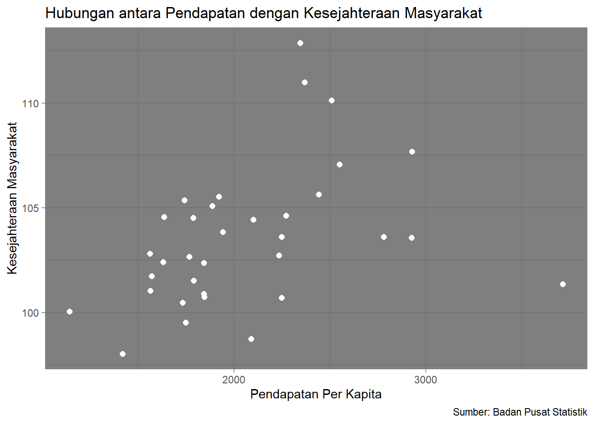

library("readxl")
library("dplyr")
library("ggplot2")
library("png")Hubungan antara Pendapatan Masyarakat dengan Kesejahteraan Masyarakat di Indonesia
Metode Penelitian Politeknik APP Jakarta

1 Pendahuluan
1.1 Latar belakang
Dalam era globalisasi saat ini, pertumbuhan ekonomi dan pendapatan masyarakat dianggap sebagai ukuran kemajuan suatu negara. Namun, pertanyaan mendasar yang muncul adalah sejauh mana pendapatan tersebut berdampak pada kesejahteraan masyarakat? Seiring dengan peningkatan pendapatan, masih banyak orang yang merasa kesejahteraannya tidak meningkat dengan sebanding. Oleh karena itu, penelitian ini dilakukan untuk menyelidiki hubungan antara pendapatan dan kesejahteraan dengan lebih mendalam, agar kebijakan pembangunan dapat lebih sesuai dengan kebutuhan nyata masyarakat.
1.2 Ruang lingkup
Penelitian ini akan berfokus kepada analisis statistik dari data pendapatan bersih pekerja bebas dan indikator kesejahteraan masyarakat. Dari penelitian ini dapat dilihat bagaimana uang yang didapatkan dari pekerjaan dapat mempengaruhi kehidupan sehari-hari.
1.3 Rumusan masalah
- Sejauh mana pendapatan dapat berkontribusi terhadap peningkatan kesejahteraan masyarakat?
- Apakah pendapatan dapat berpengaruh secara signifikan terhadap kesejahteraan?
1.4 Tujuan dan manfaat penelitian
Tujuan penelitian ini adalah untuk menyelidiki hubungan antara pendapatan dengan kesejahteraan masyarakat secara mendalam. Melalui analisis data, penelitian ini bertujuan untuk mengidentifikasi sejauh mana jumlah pendapatan yang diperoleh dapat berkontribusi terhadap peningkatan kesejahteraan masyarakat secara keseluruhan.
Manfaat penelitian ini sangat signifikan dalam merancang kebijakan pembangunan yang lebih efektif dan inklusif. Dengan memahami secara jelas bagaimana pendapatan dapat mempengaruhi kesejahteraan, kebijakan dapat lebih terarah untuk meningkatkan kondisi hidup masyarakat sehingga dapat tercipta lingkungan sosial yang lebih adil dan berkelanjutan.
1.5 Package
Dalam penelitian ini terdapat beberapa package yang akan digunakan, di antaranya sebagai berikut.
2 Studi pustaka
Para ahli ekonomi pembangunan klasik (awal pasca perang dunia kedua) sepakat bahwa kesejahteraan dapat direpresentasikan melalui tingkat pendapatan. Pendapat ini berpijak pada teori ekonomi konvensional (neoklasik) bahwa kesejahteraan (utility) merupakan fungsi dari kombinasi konsumsi barang dan jasa dimana kombinasi konsumsi akan meningkat seiring dengan tambahan pendapatan (Case & Fair, 2003).
Selain itu, tambahan pendapatan memungkinkan perekonomian negara untuk terus berkembang, baik dari segi tambahan jumlah barang dan jasa maupun ketersediaan lapangan pekerjaan (Rostow 1966).
Sederhananya, pendapatan merupakan salah satu faktor yang menggambarkan kesejahteraan masyarakat pada suatu negara. Semakin tinggi tingkat pendapatan negara, maka semakin tinggi pula kelas ekonomi masyarakat negara pada tersebut.
3 Metode penelitian
3.1 Data
Data yang digunakan dalam penelitian ini adalah “Pendapatan Bersih Pekerja Bebas Menurut Provinsi dan Lapangan Pekerjaan Utama” dan “Indikator Kesejahteraan” dari sumber resmi Badan Pusat Statistik Indonesia.

| Provinsi | Pendapatan | Kesejahteraan |
|---|---|---|
| Aceh | 1843.24 | 100.87 |
| Sumatera Utara | 1847.12 | 100.73 |
| Sumatera Barat | 1790.14 | 101.52 |
| Riau | 2271.12 | 104.62 |
| Jambi | 2249.41 | 103.61 |
| Sumatera Selatan | 1943.18 | 103.83 |
| Bengkulu | 1789.17 | 104.51 |
| Lampung | 1636.66 | 104.54 |
| Kep. Bangka Belitung | 2441.48 | 105.62 |
| Kep. Riau | 2925.36 | 103.55 |
| DKI Jakarta | 3713.24 | 101.34 |
| Jawa Barat | 2236.12 | 102.72 |
| Jawa Tengah | 1565.86 | 101.03 |
| DI Yogyakarta | 1420.39 | 98.02 |
| Jawa Timur | 1749.36 | 99.5 |
| Banten | 2780.11 | 103.6 |
| Bali | 2248.56 | 100.69 |
| NTB | 1732.87 | 100.45 |
| NTT | 1144.98 | 100.03 |
| Kalimantan Barat | 1921.29 | 105.52 |
| Kalimantan Tengah | 2549.7 | 107.05 |
| Kalimantan Selatan | 1844.36 | 102.35 |
| Kalimantan Timur | 2928.46 | 107.67 |
| Kalimantan Utara | 2368.69 | 110.99 |
| Sulawesi Utara | 2102.77 | 104.43 |
| Sulawesi Tengah | 1743.44 | 105.36 |
| Sulawesi Selatan | 2089.47 | 98.73 |
| Sulawesi Tenggara | 1767.94 | 102.66 |
| Gorontalo | 1573.36 | 101.73 |
| Sulawesi Barat | 1563.46 | 102.8 |
| Maluku | 1632.52 | 102.39 |
| Maluku Utara | 1887.98 | 105.08 |
| Papua Barat | 2510.29 | 110.12 |
| Papua | 2344.97 | 112.86 |
3.2 Metode analisis
Dalam penelitian ini, metode yang digunakan adalah dengan melakukan analisis regresi untuk mengevaluasi hubungan antara pendapatan dan kesejahteraan masyarakat. Analisis ini dapat membantu untuk mengukur sejauh mana perubahan dalam pendapatan masyarakat dapat memprediksi perubahan dalam tingkat kesejahteraan. Spesifikasi yang dilakukan adalah :
\[ y_{t}=\beta_0 + \beta_1 x_t+\mu_t \] di mana \(y_t\) adalah Pendapatan dan \(x_t\) adalah Kesejahteraan.
4 Pembahasan
4.1 Pembahasan masalah
Untuk melakukan regresi, dilakukan pembacaan data terlebih dahulu sebagai berikut.
library("readxl")
dat<-read_excel("uas.xlsx")
head(dat)# A tibble: 6 × 2
Pendapatan Kesejahteraan
<dbl> <dbl>
1 1843. 101.
2 1847. 101.
3 1790. 102.
4 2271. 105.
5 2249. 104.
6 1943. 104.Berikut merupakan hubungan antara pendapatan dengan kesejahteraan masyarakat apabila divisualisasikan.
library("ggplot2")
ggplot(data=dat,aes(x=Pendapatan,y=Kesejahteraan)) +
geom_point(color="white",size=2) +
labs(title="Hubungan antara Pendapatan dengan Kesejahteraan Masyarakat",
x="Pendapatan Per Kapita",
y="Kesejahteraan Masyarakat",
caption = "Sumber: Badan Pusat Statistik") +
theme_dark()
4.2 Analisis masalah
Berikut ini adalah hasil regresi dari data yang telah dikumpulkan.
reg<-lm(Kesejahteraan~Pendapatan,data=dat)
summary(reg)
Call:
lm(formula = Kesejahteraan ~ Pendapatan, data = dat)
Residuals:
Min 1Q Median 3Q Max
-6.4091 -2.0279 -0.2701 1.8567 8.5978
Coefficients:
Estimate Std. Error t value Pr(>|t|)
(Intercept) 98.286198 2.252613 43.632 <2e-16 ***
Pendapatan 0.002548 0.001060 2.404 0.0222 *
---
Signif. codes: 0 '***' 0.001 '**' 0.01 '*' 0.05 '.' 0.1 ' ' 1
Residual standard error: 3.134 on 32 degrees of freedom
Multiple R-squared: 0.153, Adjusted R-squared: 0.1265
F-statistic: 5.778 on 1 and 32 DF, p-value: 0.02219Hasil regresi menunjukkan bahwa terdapat hubungan yang siginifikan antara pendapatan dengan kesejahteraan masyarakat. Koefisien regresi untuk pendapatan adalah 0.002548 dengan p-value 0.0222. Setiap kenaikan unit dalam pendapatan, berkontribusi sekitar 0.002548 unit dalam tingkat kesejahteraan.
5 Kesimpulan
Berdasarkan hasil regresi yang menunjukkan bahwa pendapatan dan kesejahteraan saling mempengaruhi, maka dapat dilakukan upaya untuk meningkatkan ksejahteraan masyarakat melalui meningkatkan pendapatan melalui kebijakan pembangunan ekonomi, pelatihan keterampilan, dan penciptaan lapangan kerja. Selain itu, investasi dalam pendidikan juga dapat dikembangkan sehingga lebih efisien dan berkelanjutan.
6 Referensi
Cahyadi, D. (t.t.). ANALISIS PENGUKURAN KESEJAHTERAAN DI INDONESIA. Jurnal Ilmiah Mahasiswa FEB Universitas Brawijaya. https://jimfeb.ub.ac.id/index.php/jimfeb/article/download/4083/3603
Indonesia, B. P. S. (t.t.-a). Indikator Kesejahteraan Rakyat 2023. Diambil 25 Januari 2024, dari https://www.bps.go.id/id/publication/2023/11/06/7807339c2dfaed0ca8e0beaa/indikator-kesejahteraan-rakyat-2023.html
Indonesia, B. P. S. (t.t.-b). Rata-rata Pendapatan Bersih Pekerja Bebas Menurut Provinsi dan Lapangan Pekerjaan Utama, 2023—Tabel Statistik. Diambil 25 Januari 2024, dari https://www.bps.go.id/id/statistics-table/1/MjE5NyMx/rata-rata-pendapatan-bersih-pekerja-bebas-menurut-provinsi-dan-lapangan-pekerjaan-utama-2023.html
Kenali Pengettian Pendapatan Nasional, Manfaat, & Komponen. (t.t.). Diambil 25 Januari 2024, dari http://www.ocbc.id/id/article/2021/08/12/pendapatan-nasional-adalah